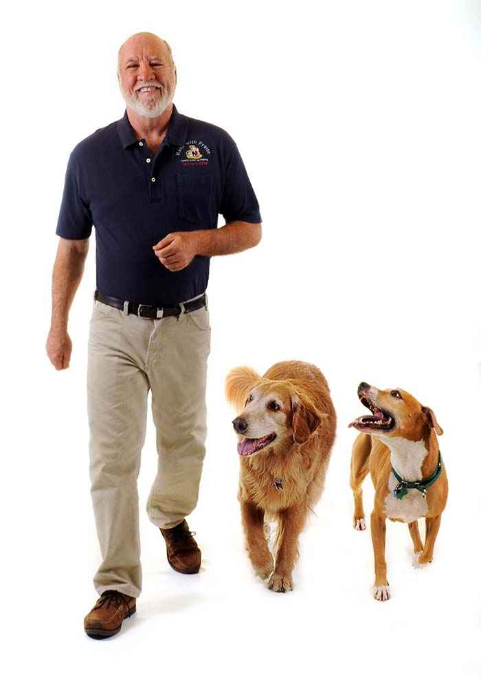

<div class="row">
    <div class="col-md-4">
        <div class="card box">
            <center>
                <h1 class="card-title" style="padding-top: 20px;font-size: 35px;">MY DOG</h1>
            </center>
            <center></center>
            <div class="card-body">

                <p class="Card-text" style="font-size: 20px;padding-left: 10px; "> <br>
                    <br>
                    This is also the period of time when most dogs begin to run away. Breed,
                    individual
                    genetics, life learning and sex can affect a dog’s desire to run.... We can also
                    inadvertently
                    teach them to run away by chasing them. To the dog, it becomes a big game.... No matter the
                    cause, running away is a preventable behavior if you use patience, consistency and proper
                    training.

                    Start training your dog to stay with you
                    by slowly walking away from it, then calling its name and rewarding it with a treat when it
                    comes to you..... You can even add to this training by spending time with friends, having
                    them call your dog, and giving it a treat when it comes to them.

                    Dogs are regarded differently in different parts of the world. Characteristics of loyalty,
                    friendship, protectiveness, and affection have earned dogs an important position in Western society,
                    and in the United States and Europe the care and feeding of dogs has become a multibillion-dollar
                    business.
                </p>
            </div>
        </div>
    </div>
</div>